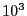
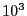
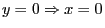
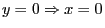

Next: Does my model have Up: Tolerances and user-scaling Previous: Avoid hiding large coefficients
Big-M constraints are a regular source of instability for optimization
problems. They are so named because they typically involve a large
coefficient  that is chosen to be larger than any reasonable value
that a continuous variable or expression may take. Here's a simple
example:
that is chosen to be larger than any reasonable value
that a continuous variable or expression may take. Here's a simple
example:
However, if the modeler has additional information that the  variable will never be larger than , then you could reformulate
the earlier constraint as:
variable will never be larger than , then you could reformulate
the earlier constraint as:
For cases when it is not possible to either rescale variable  or tighten its bounds, an SOS constraints or an indicator constraint
(of the form
) may produce more accurate
solutions, but often at the expense of additional processing time.
or tighten its bounds, an SOS constraints or an indicator constraint
(of the form
) may produce more accurate
solutions, but often at the expense of additional processing time.